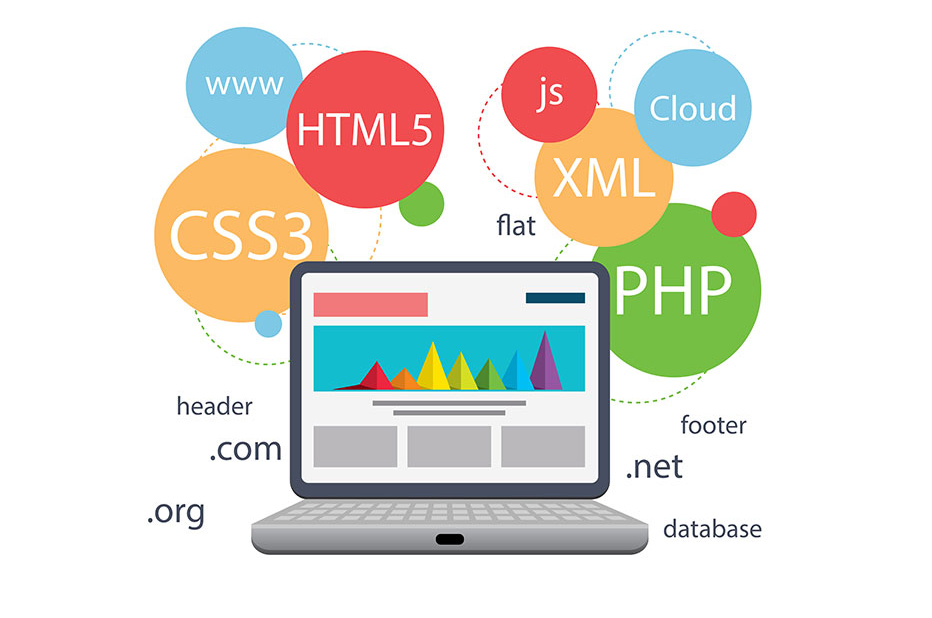
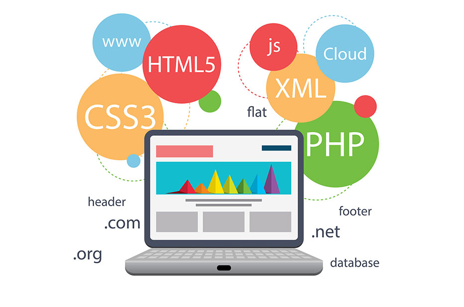

GOOGLE+
RSS
 

About AVN
AVN Technologies Inc is a pioneer technology company that helps businesses to scale-up the quality of service, achieves work efficiency, saves on time, reduces costs and sustains customer loyalty. We are a new generation company that aims to deliver innovative and cost-effective solutions for diverse industry verticals as Life Sciences and Healthcare by leveraging on the latest technologies.AVN’s solutions portfolio aims to achieve more with less. We focus on SAS Programming, Biostatistics, Data base programming, CDSIC conversion services.
AVN has developed into one of the most respected consulting in the Life Sciences and Health Care. Our team is led by industry veterans that have helped companies accomplish their recruiting goals. We are passionate about the industry and want to develop relationships with others who feel the same. Our mission is to combine superior technical knowledge of the Life Sciences and Heath care with integrity and dedication to deliver the highest level of service.
The challenges associated with each client’s project have put our project readiness in question. To counter this challenge effectively we have taken measures to enhance the readiness of personnel for the present and future project challenges.
The in-house trainings and expert interactive sessions have been made part of the employee orientation and on-job training activities. At AVN, skill development by conduct of job enrichment programs is a continuous activity.
Businesses face two immediate challenges: One, the rising expectations of customers for new and innovative products/services and second, to counter competition from rival businesses.
At AVN Technologies, we consider that, developing new projects is sure to revitalize your business. Our SAS Programming strategy encompasses all the issues of offering something new to the market, from design, development, testing and execution of projects. One of the advantages of our services that we can respond to customer needs as they change. Our strategy is based on close work association with our customers, customer surveys and evaluation of customer business needs. By making our development strategy customer-driven we assure each client a strong and competitive edge.
The team of specialists at AVN Inc is our greatest asset. We could not have realized our client’s project expectations, if not for the sustained and focused efforts of each member of our team. Even though each one of the team brings specialist experience in SAS Programming, Biostatistics, Data base programming, CDSIC conversion services; when it comes to project planning, implementation and maintenance, we act as one.
We could achieve peak performance in project management and execution only by leveraging on consensus and proven expertise of each member of the management. At AVN, we work together to deliver phenomenal value to the clients. As our work is guided by an established the client’s needs, project goals and expectation. With this as the basis we set and establish each team member’s role and responsibility.
AVN Inc is an equal opportunity company. We have based our HR philosophy on the values of trust, transparency and competency. The non-stress environment at our workplace puts work and play put in the right balance. This has helped us to sustain each team member’s interest in work, greater productive and far lesser attrition rates.
The routine at AVN includes Sports Meets, outings, celebration of birthdays, and arrangement of get-together parties at regular intervals of time. It has been integral to our work culture that good working conditions and healthy social life is a big booster of employee’s productivity, and keeps them focused at work.
Life Sciences and Biostatistics
AVN bring expertise and insights in designing trials and developing complex statistical analysis plans. Our biostatisticians possess the critical thinking to assist clients.
Our biostatisticians are industry experts in several statistical areas including adaptive design, personalized medicine, Bayesian analysis and non-inferiority approaches with extensive experience in several indications. Our biostatisticians and SAS Programmers have over 15 years of experience in NDA/BLA/PMA submission and interacting with FDA/EMEA and PMDA and actively collaborate with academic, industry and FDA working groups. Additionally, they are experienced with CDISC data standards and electronic submission standards to deliver high quality, dependable analyses.
End to End Solutions
It is a usual process that vendors are preferred over others for their competitive pricing, delivery methodology and project management skills.
AVN is preferred by clients for its expertise in providing end-to-end solutions built on their proprietary systems. We arrange for the right technical resources as per the project expectations. We offer services that deliver quality and provide measurable return on investments.
Biostatistics & Programming
AVN biostatisticians and statistical programmers provide comprehensive
biostatistics and statistical programming services to support clinical, pre-clinical
and patient reported outcomes for pharmaceutical, medical devices and biotech companies
Biostatistics services include:
- Trial design and protocol development
- Sample size calculation/justification
- Randomization schemes
- Statistical analysis plan (SAP) for different phases of clinical studies
- SAP for Integrated safety and effectiveness (ISS/ISE)
- SAP for briefing documents to regulatory agencies and publications
- Data Monitoring Committee/independent statistician services
Statistical programming services include:
- Data conversion
- CDISC-compliant and submission-ready datasets and documents
- Statistical tables, listings, and figures for clinical study reports
- Pharmacokinetic and pharmacodynamic analyses dataset preparation
Data Management
AVN provides DATA MANAGEMENT SERVICES in both PAPER-BASED and ELECTRONIC DATA CAPTURE (EDC) clinical trials per clients’ request. AVN has also developed proprietary tools and standards to work with these products to further enhance the process and provide our clients with a streamlined and efficient approach to data management that results in a quality end product.
Data Management services include:
- Case Report Form (CRF) design
- 0Database design, creation, and maintenance
- Annotated CRFs to both the database design and CDISC standards
- Data entry
- Data validation programming and testing
- Data cleaning and query management
- Laboratory data reconciliation
- Database lock
- Database transfer
- Creation and maintenance of safety database for a single study or a global repository
- Integration and verification of external electronic data
- EDC end user training
Paper Based Data Management:
For paper-based trials, AVN consultants have experiences in mainstream CDMS systems such as Clintrial™, and Oracle Clinical. Both management systems are scalable, having been deployed to manage thousands of clinical trials accommodating clinical study designs of various sizes and levels of intricacy.
Electronic Data Capture: Cost-effective e-solutions for your Clinical Research Program
For EDC studies, AVN has experiences working with industry leading EDC products such as InForm™ , Medidata and other EDC products. AVN can help your clinical research program streamline the data validation process and query resolution, reduce the time from first patient in to database lock. AVN’s ability to build the EDC database allows flexibility to take a custom approach that precisely meets your needs and your budget.
AVN’s key employees have excellent CDISC experience. CDISC data standards are rapidly becoming industry standard and adopted in various phases of clinical research. With our experience we can help your company make standards implementation seamless.
CDISC Implementation
CDISC Advantages
CDISC has developed a set of data standards to enhance data collection, management, analysis, and reporting efficiencies, improve safety monitoring, and streamline the review and approval process for investigational treatments. Under the ICH’s electronic Common Technical Document (eCTD) guidance, CDISC Study Data Tabulation Model (SDTM) is the preferred standard for content format and structure of clinical data for all clinical studies. Based on proposed federal regulations, the FDA will mandate that all clinical trial submissions be in electronic format and that the content comply with data standards guidance. AVN helps our clients by not only implementing these standards on a project or program, but also by providing our clients with an understanding of the CDISC standards.
CDISC Expertise
AVN’s is able to provide expert services to our clients for successful standards adoption paper-based clinical trials and eCRFs for electronic data capture (EDC) clinical trials following Clinical Data Acquisition Standards Harmonization (CDASH) compliant. AVN key members leverage their years of experience in statistical analysis and strategic consulting to provide SDTM mapping and Analysis Data Model (ADaM) data for statistical analysis in support of ISS and ISE.
AVN provides the following CDISC services:
- CDASH Compliant CRF (Paper or Electronic)
- CDASH and SDTM Annotated CRF
- SDTM Mapping
- ADaM Data
- Generation of Define.xml and Define.pdf as well as related Documents for submission
- Metadata and Data Repositories
- Strategic Consulting
- Comprehensive QC of SDTM/Metadata following CDISC SDTM 3.1.2, 3.1.3, 3.2
Consulting Services
Our experienced team of consultants has not only participated in all aspects of clinical trials, but has practical knowledge in a wide variety of therapeutic areas. Our teams provide high-level strategic consulting services ranging from study design to submission strategies.
AVN’s strategic consulting services include:
- Trial design
- Sample size calculations/justification
- Protocol writing
- Case Report Form(s) design
- Interim analysis plan writing
- Analysis planning
- Regulatory guidance and planning
- Clinical trial rescue
Robust Developement
Robust Project Management services with a host of products to showcase Prompt project delivery by teaming with the client’s in-house team significantly, we leverage on customization and integration of solutions. We help our clients to meet the complex needs of the business growth and provide a measurable return on their investments.
Technologies
AVN’s team of Programmers, Statisticians, Data Managers, Clinical Data base Programmers and other project personnel adopt the right-fit and custom technologies to generate high value for the clients.
Our experience on each project tells us that, by deploying the right resources with the needful technology expertise, we can ensure high value results. It not only contributes to enhancing our competencies but also reinforces our efforts to offer competitive solutions.
Specialization includes:
- SAS
- R Language
- S-Plus Language
- Oracle and Oracle Clinical Data bases
- Inform data base
- Medidata Rave
Solutions
Quality
AVN’s quality, cost-effective and value-driven solutions are based on the premise that technology innovation and domain competency are a result of our domain competency, and great understanding of the client’s business process.
Offers
AVN offer services include SAS Programming, Biostatistics, Data Management, CDISC conversion.
- Achieves a strong customer focus
- Makes a meticulous study of customer expectations and behavior, market research and technology needs
- Creates differentiated solutions that meet customer needs
- Executes cross functional ideas from idea to launch
Strategy
At AVN, innovation and synergy are the basis of our strategy. We could achieve effective cross functionality by our robust teamwork. We consider that, each project’s success is majorly dependent on the people and their skills set.
Teams
AVN includes teams of SAS Programming Managers, Sr. Biostatisticians, Data Managers that come with rich project management expertise and the right domain competency. It is only by balancing effectively the resources available and project expectations we can assure timely project delivery and create high value for our clients.
Industries
AVN team of IT professionals bring in product engineering and consulting, application development, maintenance and support, customization, upgrade, applications integration and interface development services. We offer custom and value-driven industry-specific solutions.
Our IT competencies include
- High-end consulting capabilities in Banking, Asset and Wealth Management
- Product development, product consulting, strategic partnerships and investments
- Managed services, integrated IT & Operations
- Comprehensive approach to Social Networks, Mobile Apps, Analytics, Cloud Computing and Embedded solutions
Healthcare
The global healthcare industry faces challenges of better resource utilization, strong customization of applications, integrated clinical data and service line, demand for lower cost and high quality care, protection and confidentiality of patient data, and safety concerns of patients.
Understanding the challenges that the healthcare industry confronts today, AVN has developed the right-fit and affordable solutions. Our portfolio of healthcare solutions includes secure data management, enterprise collaboration and patient engagement capability.
Our enterprise applications for the healthcare industry leverage on latest technologies: Oracle, SAP, SOA and Middleware. We have ready solutions for marketing and sales, patient records management, relationship management, information exchange, human capital management, and financial reporting.
life Sciences
AVN delivers life sciences talent and solutions to Biotech, Pharma, and medical device that drive research, development and quality in today’s leading innovations.
With an extensive network of top industry resources and life sciences expertise we deliver on our clients’ expectations every day. Whether we are providing industry-focused services or project-based and comprehensive workforce solutions, our clients count on AVN Technologies as a trusted partner.
Robust Developement
Robust Project Management services with a host of products to showcase Prompt project delivery by teaming with the client’s in-house team significantly, we leverage on customization and integration of solutions. We help our clients to meet the complex needs of the business growth and provide a measurable return on their investments.
Technologies
AVN’s team of Programmers, Statisticians, Data Managers, Clinical Data base Programmers and other project personnel adopt the right-fit and custom technologies to generate high value for the clients.
Our experience on each project tells us that, by deploying the right resources with the needful technology expertise, we can ensure high value results. It not only contributes to enhancing our competencies but also reinforces our efforts to offer competitive solutions.
Specialization includes:
- SAS
- R Language
- S-Plus Language
- Oracle and Oracle Clinical Data bases
- Inform data base
- Medidata Rave
Careers
The non-stress environment at our workplace puts work and play put in the right balance. This has helped us to sustain each team member’s interest in work, greater productive and far lesser attrition rates. We provide our personnel good and congenial work environment, transport and canteen facilities. Facilities for indoor games were arranged at the staff canteen.
The challenges associated with each client’s project have put our project readiness in question. To counter this challenge effectively we have taken measures to enhance the readiness of personnel for the present and future project challenges.
The in-house trainings and expert interactive sessions have been made part of the employee orientation and on-job training activities. At AVN, skill development by conduct of job enrichment programs is a continuous activity.
The routine at AVN includes outings, celebration of birthdays, and arrangement of get-together parties at regular intervals of time. It has been integral to our work culture that good working conditions and healthy social life is a big booster of employee’s productivity, and keeps them focused at work.
Contacts
AVN Techno Services
47-10-1/9, 3rd floor,Bhuvaneswari Plaza,
Above RBL Bank Ltd,
opp. Karachi Bakery,
Dwaraka Nagar,
Visakhapatnam-530016. A.P.